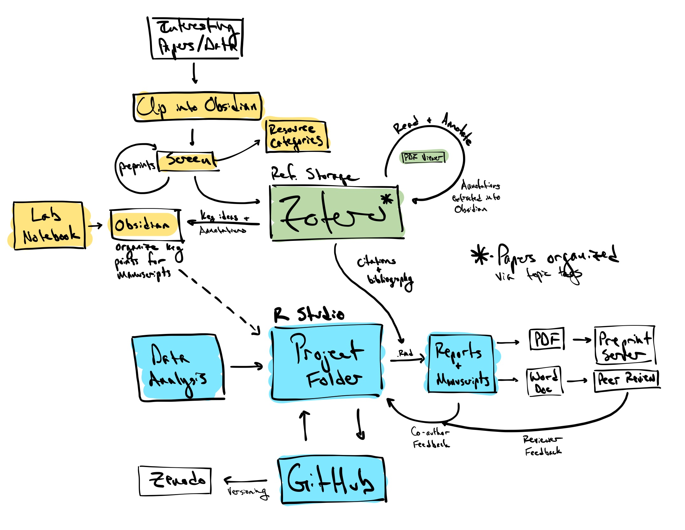

What happens outside of the project folder?
So far, we’ve focused on how the Project Folder is set up to help you go from data to final product. However, there’s a lot of work that goes into a project before you have any data. In particular, you will need to have a thorough grasp of the published literature, a well-organized plan for data collection and management, and some way to keep track of what you’ve done. The project folder can help with some aspects of this, but I’ve found that doing this work outside the project folder allows you to access a more centralized network of systems that can provide richer, more robust insights.
I’ve outlined my workflow in schematic form here, and describe some of the key tenets below. Before going any further, know that the workflow described is going to be highly individual - this is something that I’ve found works for me. You might benefit from something similar, or something completely different. Explore the (many) options out there!

Work flow priorities
A major part of research is reading literature. For better or worse, each day sees a flood of new papers published across any number of scientific journals. This is where the day-to-day workflow starts for me. You need some system for capturing, sorting, organizing, and annotating these papers. Ideally, your system will also help you to make connections between key points gleaned from these papers. Each of those steps (capturing, sorting, organizing, annotating, and synthesizing) are the focus of myriad programs, tools, approaches, and philosophies.
Before you dive into everything that’s out there, though, spend some time thinking about how you work, and what elements would actually help you get stuff done. Do you want something that is simple and streamlined? Or do you like things with all the bells and whistles, that allows you to customize things to your liking? How much time per day do you intend on spending on each of these steps? Be realistic here - there’s no point in setting up a system that requires a little time each day to work if you know you’d prefer to spend more time at less frequent intervals.
My personal workflow emphasizes five things:
Quick capture - I need to be able to quickly flag a paper, data set, protocol, news article, etc. when I see it. The key here is being able to grab anything and everything I see that might be relevant to past, present, or future work. I rely on a combination of Google Scholar and Web of Science alerts for general topics of interest, authors, and citations to certain key papers; social media; and more targeted, project-specific literature searches to collect (potentially) relevant papers.
All of these resources are collected in a single ‘inbox’. I use a page in Notion, since there’s a nice web clipper tool for this app that I can use on both my phone and computer. Once or twice a week, I’ll sit down and sort through the inbox. Not everything ends up being relevant or useful, but since it’s quick and easy to capture these resources, I don’t mind having to screen extra stuff in order to be more confident that I’m not missing important papers.
A robust centralized organization - After collecting all these resources, I need a robust system to organize everything in order to find them when they’re needed across the various projects I’m involved in. This is especially true for things that are relevant (or might be relevant) for future projects. I’ve found that it’s also really important that these systems be ‘centralized’ (i.e. - one collection of resources accessed for multiple projects, rather than an individual, independent collection for each project).
When sorting through the inbox, data sets, tutorials, and other resources are screened out and organized in a series of topic-based pages in Notion. There’s also a separate page where I keep track of preprints that look promising but haven’t been published yet. This leaves published papers, which are screened for relevance, utility, interest, etc.
Papers I want to store for later use are sent to Zotero, again using a helpful web clipper tool. Unlike many of the other main reference managers (Papers, EndNote, Mendeley, etc.) Zotero is open source and developed by a non-profit organization. Once a paper is in my Zotero library, I’ll assign it to one or more folders for specific topics or projects. This strategy seems to hit the right balance for me between project-level organization of papers and keeping things centralized.
Easy annotation - I know that I am really vulnerable to the collector’s fallacy (the notion that gathering information is the same as learning the information). I also know that I’m less likely to read something in a timely manner with more complex workflows. That being said, I want the effort that goes into reading a paper to “pay off”; specifically, I want be able to easily find the notes that I took if I wanted to return to a paper I’ve already read, rather than having to re-read the entire thing over again. This adds a few extra steps to the workflow I use.
Unfortunately, LiquidText, the app I used to rely on for reading and annotation, recently changed over to a paid subscription model. It’s a useful program, however, that allows you to highlight and comment on text (like many other programs) as well as move selected text into a workspace alongside the document you’re reading. This is really helpful for keeping track of, and making connections between, key information from throughout the document. There’s also a built-in integration between Zotero and LiquidText that makes it easy to open papers from your library, read and annotate them, and then send these annotations back to Zotero.
Luckily, Zotero (version 6) released an excellent PDF reader that I use now to read and annotate papers. Just like with LiquidText, the notes you take on the PDF can be quickly pulled into Zotero as a separate note. This keeps the reference information, PDF, and notes all together in the same place.
Making connections across resources - Some of the most interesting ideas stem from connections between two seemingly unrelated topics. I like my workflow to not only allow for those types of connections, but to promote them. I pull heavily from the Zettelkasten method to make notes on what I read. It’s not worth describing that workflow here, but in short, it relies on being able to connect different notes in an organized way, and then expand on those connections. I encourage you to explore this method a bit if you’re interested.
Regardless of the method used to take notes, you will need to keep the notes you take organized. Much like how RStudio helps you work in R, Obsidian is a text editing environment that helps you work with markdown text files. I use these files to collect and organize my notes, aided by a nice integration between Zotero and Obsidian that pulls the annotation notes into markdown files. Because all notes for all projects are kept in the same place, it’s easier to see patterns and make connections, often across project/topic boundaries.
I also use Obsidian as a digital lab notebook. The ability to use templates makes things like setting up experiments, recording the health of cultures, and keeping track of daily activities a little easier. And because it uses markdown files, you don’t have to worry about not being able to access data across systems.
Integration - There’s no single perfect app that does everything I want to aid my workflow. I also don’t want to be reliant on a bunch of different apps and software (I know I am too easily distracted by the grandeur of these complex workflows to get any actual work done with them). Over time I’ve settled on the workflow described here, which relies on just a couple, relatively streamlined programs that integrate nicely with each other. Additionally, while relying on centralized systems, there’s no barriers to the flow of information and insight from outside to inside the project folders. For me, this is the most important aspect; to be able to go from a broad, centralized network of resources to highly specific application to individual projects.
Remember, the system I’ve outlined here is what works for me. Everyone works in different ways though. You can take the components (if any) that work for you and then explore your other options to fill in the gaps in your workflow. Keep in mind that this workflow is a major part of how you interface with the scientific world; Try to find something that helps you feel excited about the material you’re working with! This will probably be an iterative process. You might not land on something right away. But as you learn more (and learn more about how you learn best), the features and priorities of an ideal personal workflow will solidify.